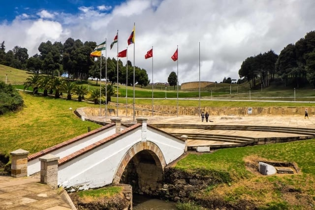
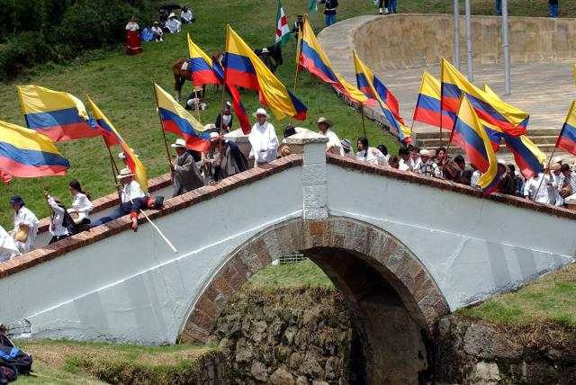
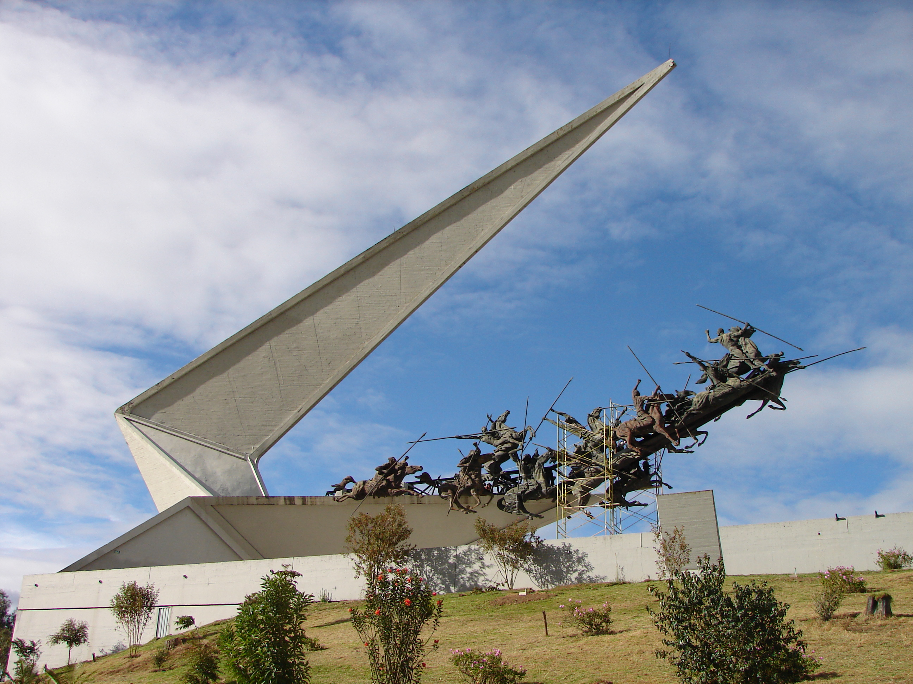
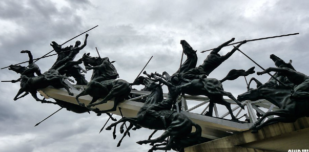
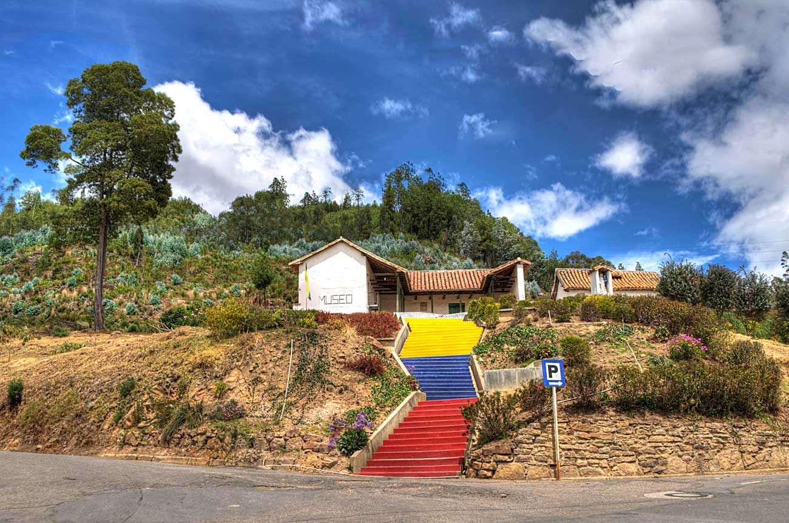

Lugares turisticos de Boyacá
En el Puente de Boyacá se libró en 1819 la batalla que marcó el final de la época colonial para la Nueva Granada y el advenimiento de la era Republicana de la Gran Colombia, de la cual harían parte Colombia, Venezuela, Ecuador, Perú y Bolivia.
Es un monumento declarado Patrimonio Cultural de la Nación ubicado en el Campo de Boyacá, en el Distrito Histórico y Cultural de Tunja en el municipio de Ventaquemada, departamento de Boyacá, en el centro de Colombia.
/* 
Además del Puente de Boyacá, allí se encuentran:
– El Monumentos al Libertador Simón Bolívar del escultor Ferdinand Von Millar
– La Plaza de las Banderas, la cual está destinada para las grandes concentraciones oficiales, militares, cívicas y estudiantiles. Allí se localiza El Pebetero que mantiene la llama perpetua de la libertad; y en las orillas hacia el norte y sur, las banderas de los países Bolivarianos.
– La Estatua del General Santander.
– El Obelisco.
– El Ciclorama.
– Las Piedras de Barreiro, ahora llamadas las piedras de Pedro Pascasio Martínez.
El Pantano de Vargas es un atractivo cultural e histórico ubicado a 10 km del casco urbano por vía pavimentada, es un reconocimiento del entorno histórico de la batalla militar más importante de la campaña libertadora de 1819.
En este sitio puedes presenciar el Monumento a los Lanceros, una obra del artista colombiano Rodrigo Arenas Betancourt, en homenaje al coronel Juan José Rondón y sus 14 lanceros que libraron una de las batallas más célebres de la historia de Colombia. Esta imponente escultura en bronce es considerada uno de los monumentos más grandes del país, con 33 metros de altura, 100 metros de largo y 30 de ancho.
 Alrededor del monumento también podrás visitar la Casa Museo del Pantano de Vargas, la entrada al museo tiene un costo de $3000 por persona, así mismo encontrarás algunos restaurantes, tiendas de artesanías y servicio de parqueadero.
Considerada una de las ciudades coloniales más bellas de Colombia, Leyva parece haberse marchitado en el tiempo. Fundada por los españoles en 1572, la ciudad ha sido durante mucho tiempo el granero de Colombia, donde se cultiva maíz y aceite de oliva. Declarada monumento nacional en 1954, la ciudad es el último bastión del colonialismo español y sus características arquitectónicas son sus edificios con paredes de piedra, calles adoquinadas o la Plaza Mayor (la plaza más grande de Colombia).
La afluencia de turistas a la zona ha cambiado el funcionamiento interno de la ciudad, con la apertura de muchos hoteles, galerías de arte, restaurantes y tiendas de artesanía local. La provincia de Boyacá, donde se ubica Villa de Leyva, es una zona de tierra seca y desierto llena de magia. Doce años más tarde, la ciudad se trasladó a su ubicación actual tras la oposición de la comunidad aborigen de la ciudad, que quería proteger el lugar religioso en peligro de extinción. Posteriormente, la ciudad de Leyva se convirtió en símbolo de la gran riqueza y gloria del país. El cultivo de trigo y la producción de aceite de oliva han beneficiado a la localidad a lo largo de los años. La ciudad de Leyva ha sido durante mucho tiempo el granero de Colombia, con una extensa producción agrícola y salinera. Esta ciudad es también uno de los últimos bastiones del poder colonial español.


Pueblito boyacense
La historia del pueblito boyacense empieza en el año 1992 cuando el maestro Ricardo Bautista tuvo la idea de crearCrear un pueblo que reuniera a diversos artistas. Entre pintores, escritores, músicos, compositores, artesanos y de otras áreas en general, luego de varios años, en 1996 su idea se cristaliza con el apoyo de diferentes entidades. La obra compuesta por 7 manzanas cada una de 16 casas, en las cuales están representados los municipios de Tibasosa, Villa de Leyva, Monguí, Ráquira, Cocuy, Sáchica y Tenza.
Con una plazoleta interna en cada barrio la cual debe adaptarse en lo posible a las características del municipio representado.Adicionalmente, se puede encontrar, la capilla del pueblo, plaza de eventos, servicios de alojamiento, restaurantes, cafeterías, artesanías, entre otras actividades para realizar.
Durante el año se realizan diversas actividades culturales:
♦ Semana Santa Cultural,
♦ participación semana Bolivariana (julio),
♦ bazar de las artes (octubre),
♦ participación Concurso nacional de música Colombiana -Cacique Tundama (Noviembre),
♦ iluminación navideña (a partir del 8 de diciembre).
♦ Además se puede admirar la arquitectura, el colorido de sus casas, las plantas y flores que
adornan los
jardines.